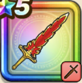

ほのおのつるぎ
攻略班 6.0点 / かえん斬りやいばくだきベギラマメラブレード
くわしい特徴
【レベル別習得スキル】 Lv1かえん斬り（消費MP：3）敵1体に威力130%のメラ属性斬撃ダメージを与える Lv10やいばくだき（消費MP：10）敵1体に威力150%の斬撃ダメージを与え、たまに攻撃力を1段階下げる Lv20ベギラマ（消費MP：14）はげしい炎で敵全体にギラ属性の呪文小ダメージを与える Lv30メラブレード（消費MP：30）敵1体に220％のメラ属性斬撃ダメージを与える Lv40暴嵐の四天王へのダメージ+3% Lv50攻撃力+6 【限界突破スキル】 1凸【晴れ】攻撃力+20 2凸メラブレードのダメージ+10% 3凸メラブレードのダメージ+10% 4凸メラブレードのダメージ+20%